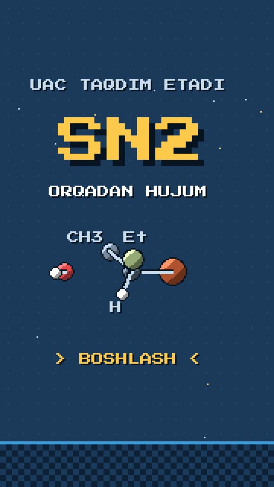
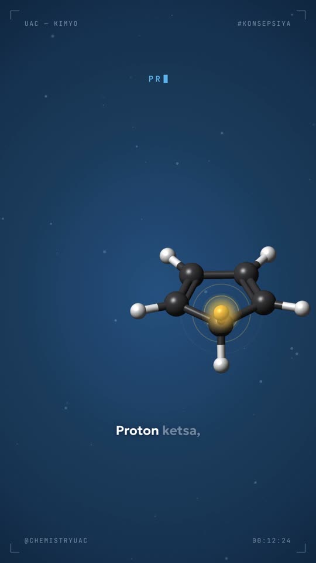
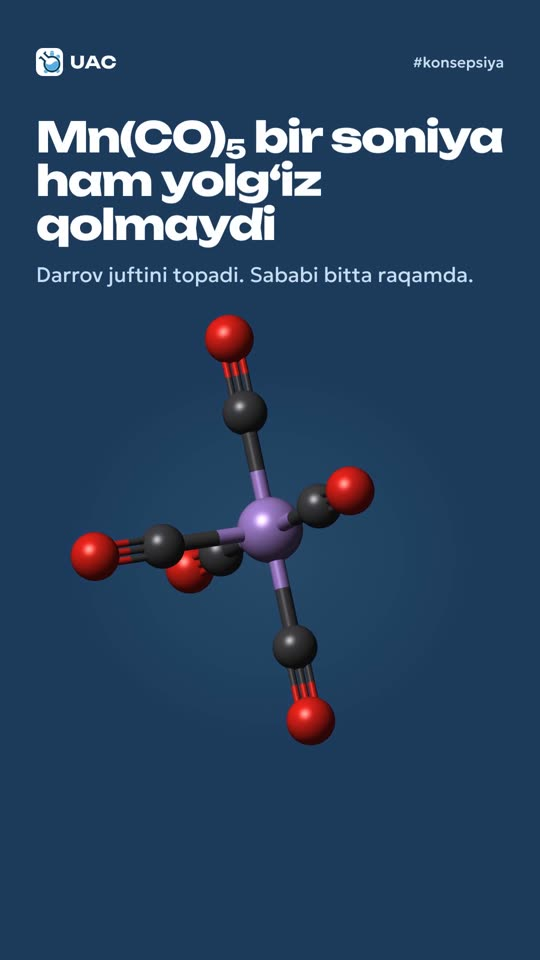

Konsepsiyalar
Olimpiada masalalarida kerak bo‘ladigan g‘oyalar. Har birida qisqa video, tushuntirish va bitta masala bor.

Organik kimyoSN2: orqadan hujum
Bir bosqich, orqadan hujum, inversiya. 8-bit o‘yin ko‘rinishida.
12-noyabr, 2026 · video 35 soniya
Organik kimyoSiklopentadien nega kislota?
Uglevodorod suv bilan bir qatorda turadi. Sababi aromatiklikda.
8-noyabr, 2026 · video 49 soniya
Koordinatsion kimyo18 elektron qoidasi
Karbonil formulasini bir daqiqada tekshirish usuli: metall atrofidagi elektronlarni sanang.
31-oktabr, 2026 · video 20 soniya